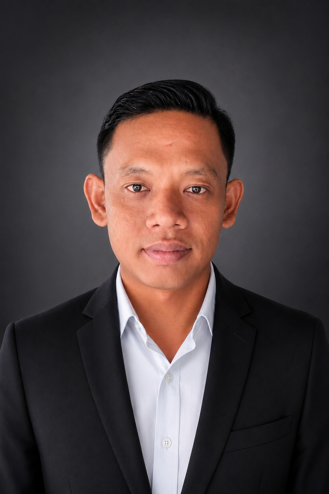

Bambang Yutriono
Balikpapan, Kalimantan Timur (Bersedia Relokasi)
Professional Profile
Profesional Telecommunication, Network Infrastructure, IT Support, dan Project Operations dengan pengalaman lebih dari 10 tahun dalam implementasi, operasi, pemeliharaan, dan administrasi proyek pada sektor telekomunikasi, pertambangan, minyak & gas, industri, enterprise, dan retail.
Berpengalaman menangani Network Engineering, IT Infrastructure, Fiber Optic, FTTH, VSAT, Radio Link, Point-to-Point Microwave, SD-WAN, CCTV, Project Administration, Document Control, serta koordinasi operasional lapangan mulai dari tahap implementasi, commissioning, maintenance, troubleshooting, hingga project handover.
Terbiasa bekerja dalam lingkungan berorientasi SLA, berkolaborasi dengan Project Manager, Engineer, QA/QC, NOC, Service Desk, Vendor, dan Client, serta memiliki kemampuan mengintegrasikan aspek teknis dan administrasi untuk mendukung penyelesaian proyek secara efektif, tepat waktu, dan sesuai standar perusahaan.
Experience & Achievements
Document Controller
PT Empore Hezer Tama (Nokia Inhouse - Indosat Ooredoo Hutchison) Surabaya | Agu 2025 – Mar 2026- Mengelola 150+ dokumen proyek selama siklus implementasi, verifikasi, pengendalian revisi, dan pengarsipan dokumen.
- Menyusun ATP, SIR, PR, Progress Report, dan transmittal; berkoordinasi dengan PM, Engineer, QA/QC, hingga Client.
- Mendukung kelancaran proses Project Handover melalui dokumentasi yang akurat dan sistematis.
Permit & Site Supervisor
PT Grha Prima Agung (ZTE-EMR FTTH Project) Blitar | Des 2023 – Feb 2025- Mengkoordinasikan 30+ teknisi lapangan dan mengelola administrasi perizinan 50+ lokasi proyek FTTH.
- Review As Plan Design (APD), penyusunan Redline Drawing, serta mendukung ATP/PAT/FAT/Site Acceptance/Commissioning.
- Memastikan implementasi proyek berjalan sesuai target kualitas, waktu, dan standar perusahaan.
Field Network Engineer
PT Tangguh Mandiri Bersama (Authorized Partner Lintasarta) Balikpapan | Nov 2016 – Agu 2023- Instalasi, konfigurasi, commissioning, dan troubleshooting LAN/WAN (Cisco, MikroTik, Ubiquiti, Cambium, Ceragon), Fiber Optic, VSAT, Radio Link, dan Microwave.
- Pencapaian: Menjaga uptime 99.5%, Menyelesaikan 200+ tiket SLA, Memimpin pembangunan 2 tower 60 meter (Grounding, Lightning Protection, Radio Link).
- Berhasil menginstal dan mengaktifkan Microwave Radio Link 1.8m untuk konektivitas Chevron, serta berpartisipasi dalam pembangunan infrastruktur Program BAKTI di daerah terpencil.
Video Editor & IT Technician
Cahaya Multimedia & PT Indonusa Telemedia (TelkomVision) Samarinda | 2011 – 2016Portfolio Project
Berikut adalah proyek-proyek besar dan pencapaian yang pernah saya tangani.
Project Nokia – Indosat Ooredoo Hutchison
- Mengelola 150+ dokumen proyek dari verifikasi, pengendalian revisi, hingga Project Handover.
Project ZTE-EMR FTTH
- Supervisi lapangan untuk 30+ teknisi dan perizinan 50+ lokasi FTTH di Blitar.
Chevron Radio Link (PT Aplikanusa Lintasarta)
- Instalasi, alignment, dan aktivasi Microwave Radio Link 1.8 meter di Telkom Bontang.
Infrastruktur BAKTI Indonesia
- Pembangunan infrastruktur telekomunikasi di wilayah operasional 3T (Terdepan, Terluar, Tertinggal).
Enterprise & Mining Support
- Network Deployment & Maintenance untuk PT Berau Coal, Pertamina Hulu Kaltim (PHKT), Wilmar Nabati, Dharma Henwa, dan Berau Karetindo Lestari (BKL).
Freelance Project (SD-WAN & Commercial)
- Instalasi perangkat SD-WAN PT Artacom di gerai Alfamart Balikpapan, Instalasi CCTV, serta troubleshooting jaringan enterprise.
Skills & Certifications
Sertifikasi Profesional
- ✔️ Cisco CCNA 200-301 (2023)
- ✔️ MikroTik MTCNA (2021)
- ✔️ K3 TKBT Level 2
- ✔️ Work At Height (WAH)
- ✔️ Basic Sea Survival (BSS)
Photo Gallery
.jpeg)
.jpeg)
.jpeg)
.jpeg)
.jpeg)
.jpeg)
.jpeg)
.jpeg)
.jpeg)
.jpeg)